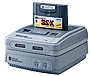

Satellaview+ is the revival service to St. Giga's sattelite service, Satellaview, which allows you to play special Satellaview games, read magazines, and more!

|
The Satellaview+ service works using emulation software on Windows machines. Expansion to other OSes, such as Linux and Mac, are planned for future releases, but Android/iOS development will not be present. Please visit the "How To Connect" link below for instructions on getting started.
Satellaview+ Broadcasting Hours
8am - 11pm (US EST)
Please get more information of the programs from the Program Schedule and at the SoundLink+ Program Schedule
Also, if there is a special event, it will be listed in the Special Events webpage.
|
|